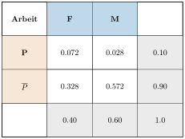
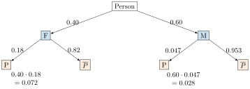

Aufgabe 5.6
Die Luzerner Zeitung meldet, dass jeder 10. Arbeitsplatz in der Schweiz als «prekär» anzusehen ist, was die soziale Absicherung betrifft. Frauen sollen davon besonders betroffen sein. Untersuchen Sie diese Behauptung genauer, indem Sie als weitere Daten benutzen, dass $40\%$ der arbeitenden Bevölkerung Frauen sind. Davon stehen $82\%$ in einem Arbeitsverhältnis mit ausreichender sozialer Absicherung. Welcher Anteil der prekären Verhältnisse entfällt auf die Frauen im Gegensatz zu den Männern?
- Definieren Sie F (Frau), M (Mann) und P (prekär)
- Nutzen Sie «82% der Frauen haben gute Absicherung» zur Berechnung von $P_F(P)$
- Erstellen Sie eine Vierfeldertafel und nutzen Sie die Randsummen
- Berechnen Sie aus $P(P) = 0.10$ und $P(F \cap P)$ den Anteil $P(M \cap P)$
Gegeben:
- $P(P) = 0.10$ (10% aller Arbeitsplätze sind prekär)
- $P(F) = 0.40$ (40% der Arbeitenden sind Frauen)
- $P_F(\overline{P}) = 0.82$ (82% der Frauen haben gute Absicherung)
Gesucht:
- Anteil der Frauen an allen prekären Verhältnissen: $P_P(F)$
- Vergleich der Risiken für Frauen und Männer
Vorbereitende Berechnungen:
- $P_F(P) = 1 - P_F(\overline{P}) = 1 - 0.82 = 0.18$
- $P(F \cap P) = P_F(P) \cdot P(F) = 0.18 \cdot 0.40 = 0.072$
- $P(M) = 1 - P(F) = 0.60$
- $P(M \cap P) = P(P) - P(F \cap P) = 0.10 - 0.072 = 0.028$
Lösungsweg 1: Mit Vierfeldertafel

Lösungsweg 2: Mit Baumdiagramm

Berechnung von $P_M(P)$: Da $P(M \cap P) = 0.028$ und $P(M) = 0.60$: $$P_M(P) = \frac{0.028}{0.60} = 0.047 = 4.7\%$$
Auswertung der Ergebnisse:
1. Anteil der Frauen an allen prekären Verhältnissen: $$P_P(F) = \frac{P(F \cap P)}{P(P)} = \frac{0.072}{0.10} = 0.72 = 72\%$$
2. Vergleich der Risiken:
- Frauen: $P_F(P) = 18\%$
- Männer: $P_M(P) = 4.7\%$
- Relatives Risiko: $\frac{18\%}{4.7\%} \approx 3.8$
Fazit:
Die Behauptung der Luzerner Zeitung wird bestätigt:
- Obwohl Frauen nur 40% der Arbeitenden ausmachen, stellen sie 72% aller prekär Beschäftigten
- Berufstätige Frauen haben ein fast viermal so hohes Risiko wie Männer
- Von allen prekären Arbeitsverhältnissen entfallen 72% auf Frauen und nur 28% auf Männer